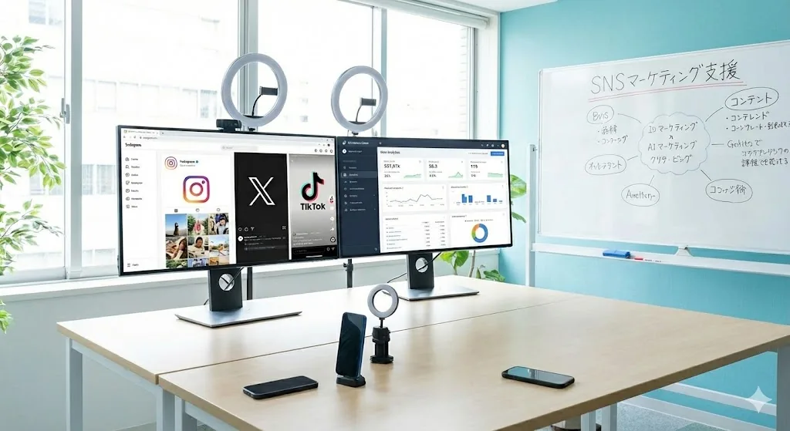

自分で考える
指示を待つのではなく、目的から逆算し、自分の言葉で次の行動を決めます。


PEOPLE, CULTURE & COMPANY
私たちの考え方、働く環境、会社の現在地についてお伝えします。
01 OUR CULTURE
個人の強みを持ち寄り、顧客の成果に向けてチームで動く。
役割に閉じず、必要な仕事に手を伸ばす。良い提案は立場に関係なく採用する。少人数の組織だからこそ、一人ひとりの判断と行動が会社の成長に直結します。


02 VALUES
指示を待つのではなく、目的から逆算し、自分の言葉で次の行動を決めます。
売ることを目的にせず、相手の事業に本当に必要な提案を選びます。
過去のやり方に固執せず、より良い方法へ素早く更新します。
自分の担当範囲だけで終わらせず、成果が出るところまで責任を持ちます。
04 WORK STYLE
企画、提案、制作、運用まで、職種を越えて事業の流れを理解できます。
必要な改善はその場で議論し、良い案を早く実行に移します。
営業の型や制作フロー、組織ルールまで自分たちで磨いていけます。
05 COMPANY PROFILE